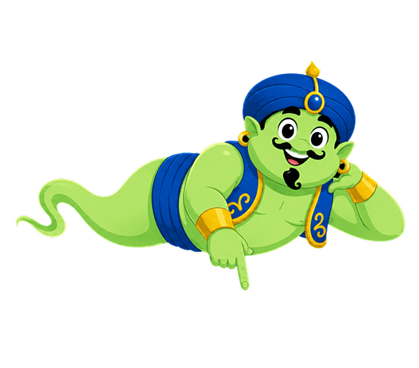

Tap the container that can hold more juice.
1/3
★
★
★
Let's Play!
★
★
★
Tap the container that can hold more juice.
1 / 38
★★★
Select one container.
★★★
Fantastic!
You learned which containers
can hold more juice!
Play Again